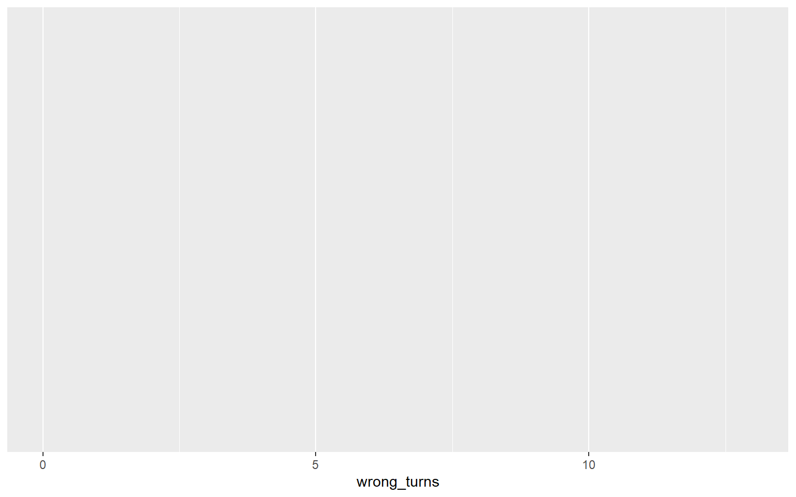
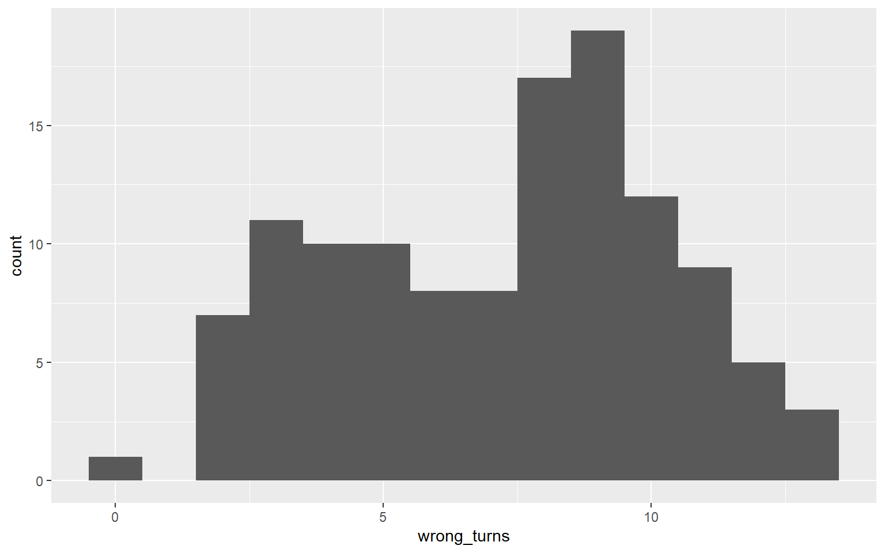
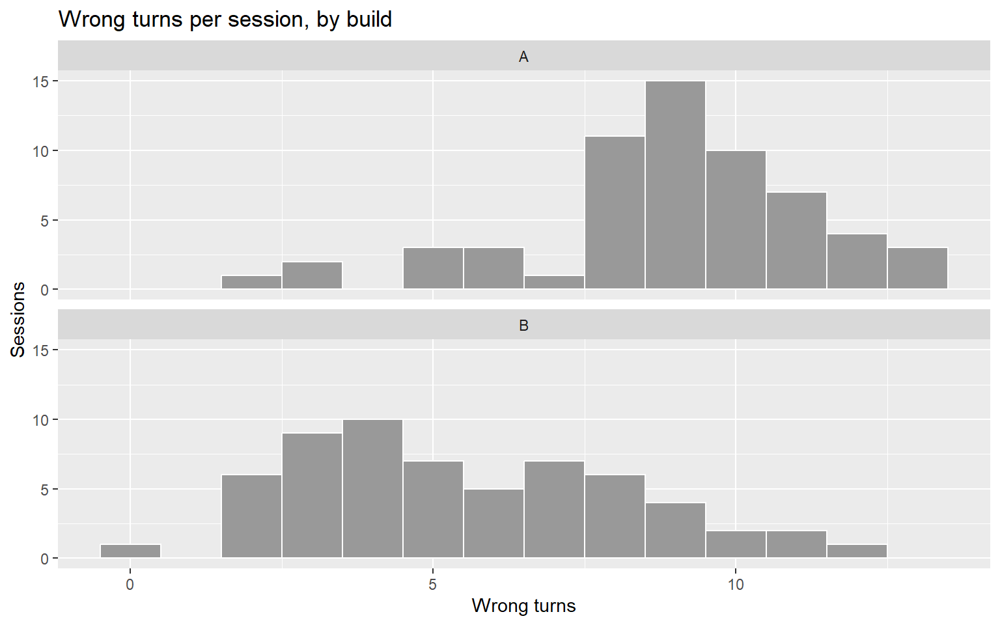
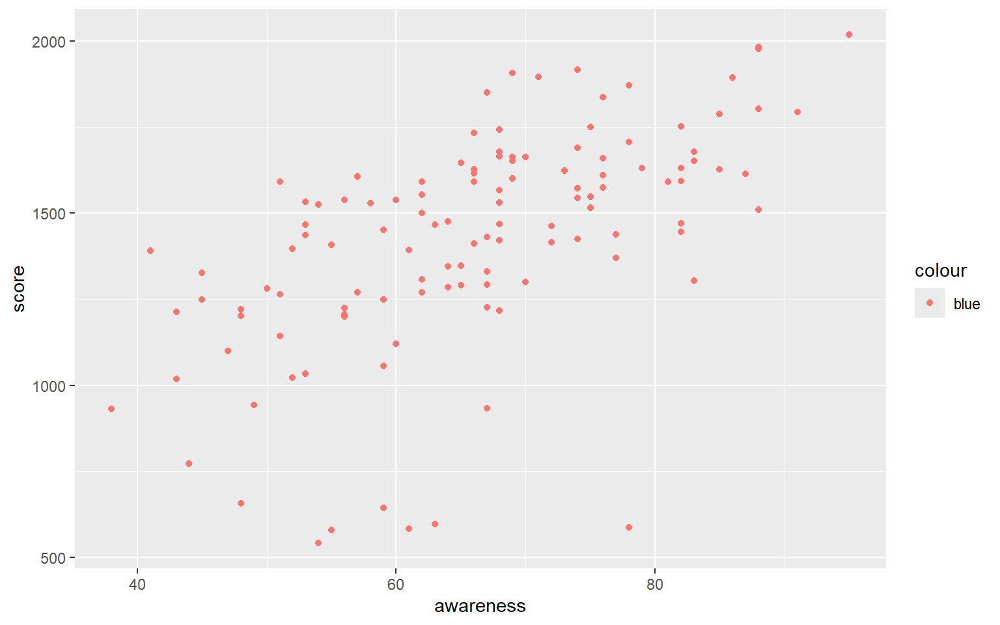
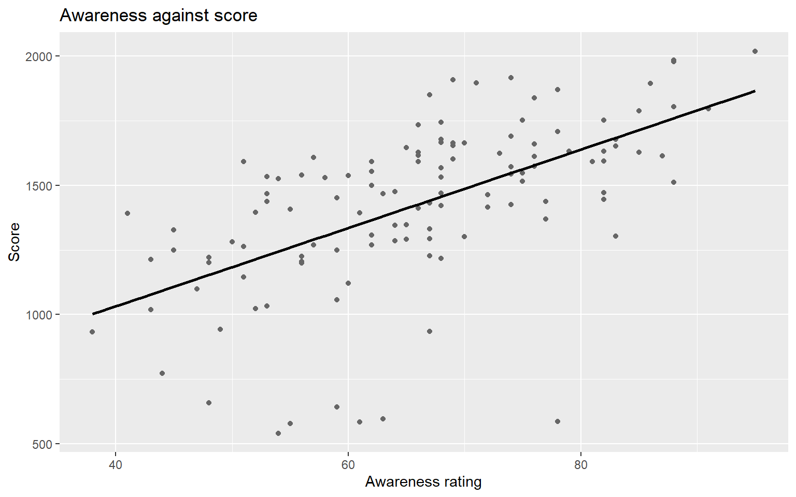
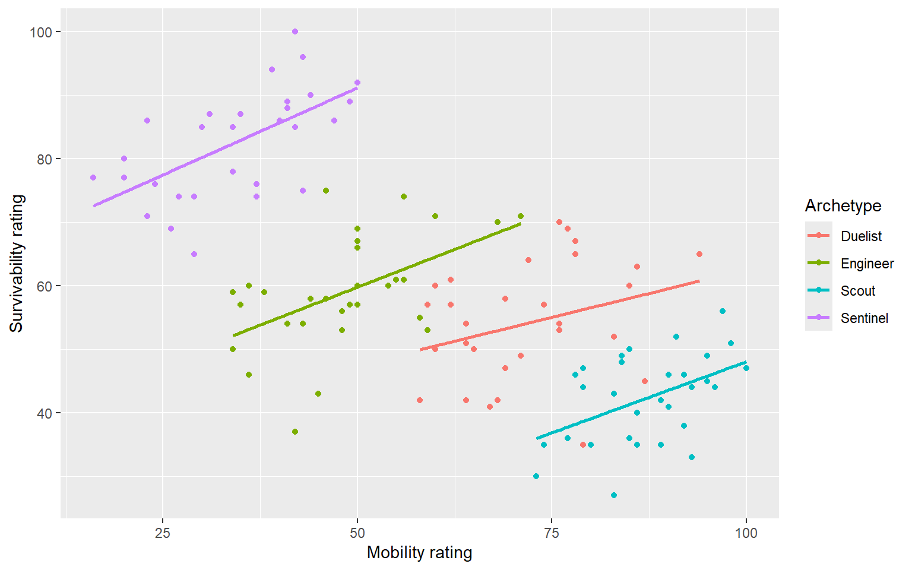

library(readr)
library(dplyr)
library(ggplot2)
sessions <- read_csv("data/tidebreak_sessions.csv", show_col_types = FALSE)
# Data plus mapping gives axes and nothing else: no geometry, no marks.
ggplot(sessions, aes(x = wrong_turns))
Figures, relationships, reshaping and a report that recomputes, live
The lecturer’s script for the two 15-minute demo slots in Week 3. Every chunk runs and shows its output. Step through it top to bottom; the bold headings are the places to pause.
ggplot2from here on.
Step 1. Data and mapping, no geometry
library(readr)
library(dplyr)
library(ggplot2)
sessions <- read_csv("data/tidebreak_sessions.csv", show_col_types = FALSE)
# Data plus mapping gives axes and nothing else: no geometry, no marks.
ggplot(sessions, aes(x = wrong_turns))
Step 2. Add a geometry
# + adds a layer. binwidth = 1 because wrong turns are whole numbers.
ggplot(sessions, aes(x = wrong_turns)) +
geom_histogram(binwidth = 1)
Pause here. Ask: this is correct. Why does it not answer “did Build B help”?
Step 3. Map a group, and watch it mislead
# fill = build inside aes() is a MAPPING: colour follows the data, legend appears.
# But histograms stack by default, so Build A floats on top of Build B.
ggplot(sessions, aes(x = wrong_turns, fill = build)) +
geom_histogram(binwidth = 1)
Step 4. Facet instead, and label it for a reader
# One panel per build, stacked so the x axes line up.
# fill = "grey60" OUTSIDE aes() is SETTING: fixed colour, no legend needed.
ggplot(sessions, aes(x = wrong_turns)) +
geom_histogram(binwidth = 1, fill = "grey60", colour = "white") +
facet_wrap(~ build, ncol = 1) +
labs(title = "Wrong turns per session, by build",
x = "Wrong turns", y = "Sessions")
Pause here. Ask: Build B is lower. What else is different about its shape?
Step 5. The mapping bug, on purpose
# "blue" inside aes() is treated as data: salmon points, and a legend saying "blue".
ggplot(sessions, aes(x = awareness, y = score)) +
geom_point(aes(colour = "blue"))
Step 6. The scatterplot, done properly
# colour SET outside aes(); geom_smooth(method = "lm") adds the straight-line fit.
ggplot(sessions, aes(x = awareness, y = score)) +
geom_point(colour = "grey40") +
geom_smooth(method = "lm", se = FALSE, colour = "black") +
labs(title = "Awareness against score", x = "Awareness rating", y = "Score")
cor(sessions$awareness, sessions$score) # the line, as one number[1] 0.5907852cor(sessions$shots_fired, sessions$score) # the stat everyone assumes matters[1] 0.05307857Step 7. A strong correlation that means the opposite
cor(sessions$mobility, sessions$survivability) # faster players are more fragile?[1] -0.6562375# Map colour to archetype: one cloud and one trend line per group.
ggplot(sessions, aes(x = mobility, y = survivability, colour = archetype)) +
geom_point() +
geom_smooth(method = "lm", se = FALSE) +
labs(x = "Mobility rating", y = "Survivability rating", colour = "Archetype")
Finish here. Ask: the overall correlation is negative; every archetype’s line goes up. Which one answers “should a Scout lose health as they get faster”? Archetype is the confound. This is Lab 03, Exercise 06.
Step 8. The survey arrives wide
library(tidyr)
survey <- read_csv("data/tidebreak_survey.csv", show_col_types = FALSE)
head(survey, 2) # one column per question: the item is a column NAME# A tibble: 2 × 9
session_id controls_responsive objective_clear difficulty_fair level_navigable
<chr> <dbl> <dbl> <dbl> <dbl>
1 S001 3 1 3 1
2 S002 4 4 3 4
# ℹ 4 more variables: death_understood <dbl>, visual_style <dbl>,
# would_play_again <dbl>, match_length <dbl>Pause here. Ask: how would you get the mean of all eight items, by build, from this shape?
Step 9. Pivot it long
# Stack every column except the key: names into item, values into rating.
long <- survey |>
pivot_longer(-session_id, names_to = "item", values_to = "rating")
dim(survey)[1] 120 9dim(long) # 120 sessions x 8 items = 960 rows[1] 960 3Step 10. Every item at once, now that item is a column
long |>
group_by(item) |>
summarise(agree = mean(rating >= 4)) |> # TRUE counts as 1
arrange(agree)# A tibble: 8 × 2
item agree
<chr> <dbl>
1 death_understood 0.217
2 objective_clear 0.233
3 difficulty_fair 0.308
4 level_navigable 0.392
5 would_play_again 0.508
6 controls_responsive 0.758
7 match_length 0.758
8 visual_style 0.933Step 11. The report skeleton
The report is a .qmd file: the nine part headings, a hidden setup chunk, and numbers written as inline R.
---
title: "Tidebreak Build B: Playtest Report"
---
```{r}
#| echo: false
sessions <- readr::read_csv("data/tidebreak_sessions.csv", show_col_types = FALSE)
```
## 1. Research question
## 2. Experimental design
We analysed `r nrow(sessions)` sessions.
## 3. Descriptive evidence
...
## 9. Design conclusionStep 12. Watch the inline numbers recompute
# One sentence of the report, with its numbers as inline R.
part2 <- paste(
"We analysed `r nrow(sessions)` sessions. Build A's median session lasted",
"`r median(sessions$session_minutes[sessions$build == 'A'], na.rm = TRUE)` minutes."
)
# render_text() does to this sentence what quarto render does to the report.
render_text(part2) # against the full data...
We analysed 120 sessions. Build A's median session lasted 23.25 minutes.# ...then against Week 2's raw export with incomplete rows dropped.
raw <- read_csv("data/tidebreak_sessions_raw.csv", show_col_types = FALSE)
sessions <- raw[!duplicated(raw), ]
sessions <- sessions[complete.cases(sessions), ]
render_text(part2)
We analysed 109 sessions. Build A's median session lasted 25.5 minutes.Finish here. Same sentence, nobody retyped a number, and both figures changed. The second one also shows why the cleaning log goes in part 2: the report is only as honest as the data it was rendered against.